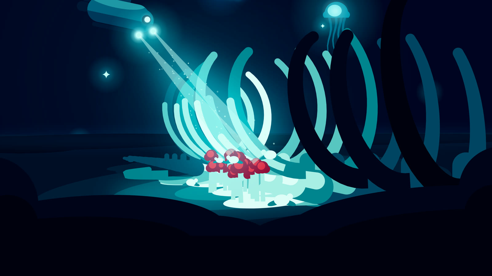
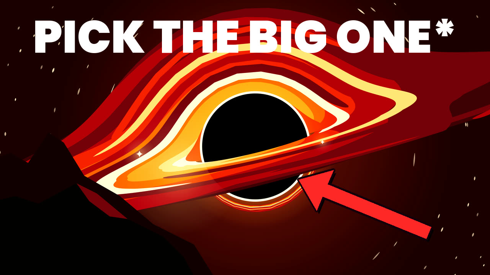
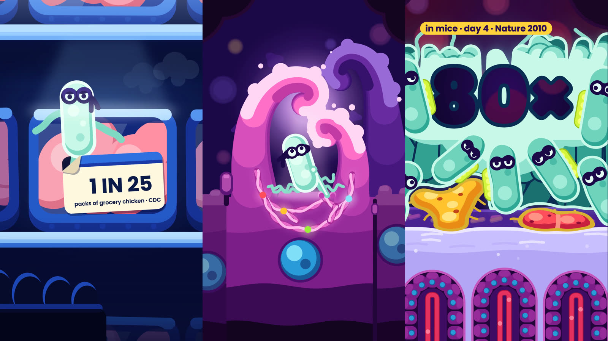
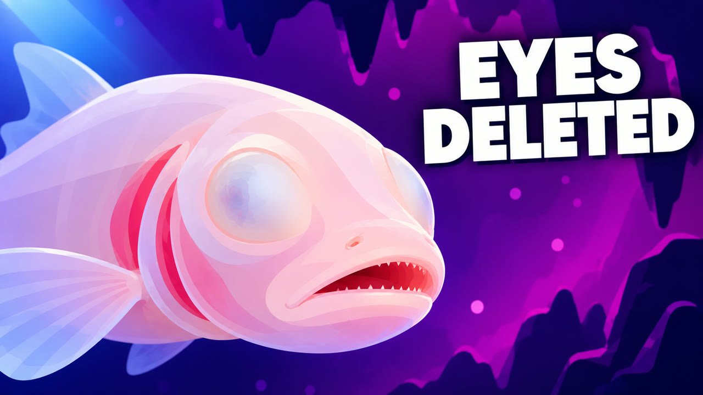

Animated science films
The wonders of everything, taken apart gently.
Short animated films about the biggest and strangest questions we can ask. Every number has a source, and when we simplify, we say so.
Films
Each one has a page of sources and notes
-

Space · 4:50What If You Fell Into a Black Hole?
Pick a small one and you never reach it in one piece. Pick a giant one and you won't notice the point of no return. What clocks do on the way down, and why the "whole future flashes past" story is wrong.
-
Mind & society · 5:17
If They Are the Influencers, You Are the Influenced
From Asch's 1951 line test to recommendation feeds: why we copy, why a stranger on a screen can feel like a friend, who pays for it, and what the evidence really says about the harm.
-

Body & microbes · Short · 1:02Salmonella's Perfect Inside Job
A one-minute heist: a hollow needle picks the lock of a gut cell, and then your own immune alarm makes a chemical only Salmonella can breathe.
-

Life & evolution · 10:37Small Worlds Make Strange Things
Islands, caves and old lakes shut life in, and it writes its own rules: elephants shrink, fish throw away their eyes, an axolotl never grows up. Then somebody comes.
-
Mind & money · 11:18
Why Smart People Fall for Scams
A heart surgeon gets a call from her bank. Intelligence is a poor shield against a con that goes for your alarms and starts a clock. What the research says, and the one habit that helps.
How we make these
Pretty pictures, honest sentences.
- Every claim is sourced.
Each factual sentence in a script is tagged to a research note with its source, then checked again by a separate fact-check before the voice is recorded. You can read the result on each film's page.
- Numbers are recomputed.
When a figure comes from a formula (how wide a squeezed Earth would be, how long a fall takes), we redo the calculation ourselves and say that we did.
- Simplifications are shown.
Every film leaves things out. Each page lists what we simplified, what nobody knows yet, and where scientists still disagree.
- Some skies are computed.
The warped skies around the black holes are rendered from real general relativity, not just drawn by hand.